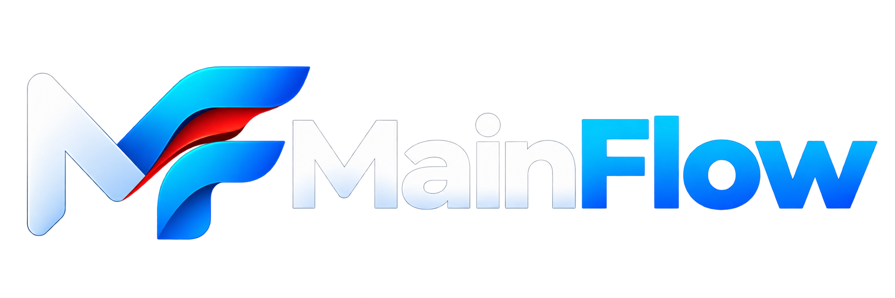

Interface de integração entre Leankeep e o Planner da Microsoft
Ao criar uma ocorrência no LeanKeep, um cartão será criado automaticamente no Kanban.
Fluxo de Funcionamento


Integração entre sistemas
Interface de integração entre Leankeep e o Planner da Microsoft
Ao criar uma ocorrência no LeanKeep, um cartão será criado automaticamente no Kanban.